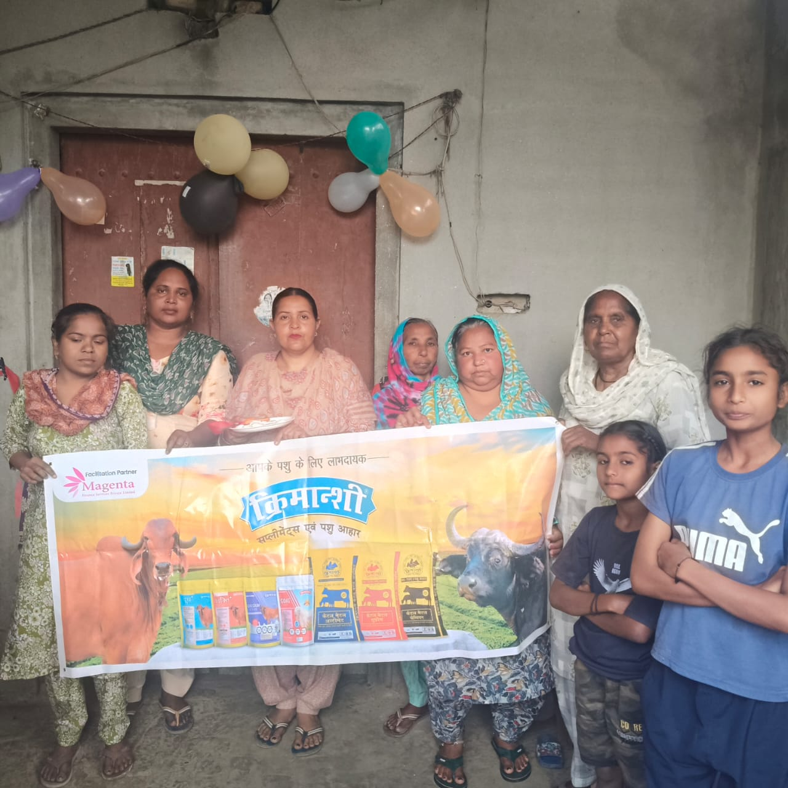

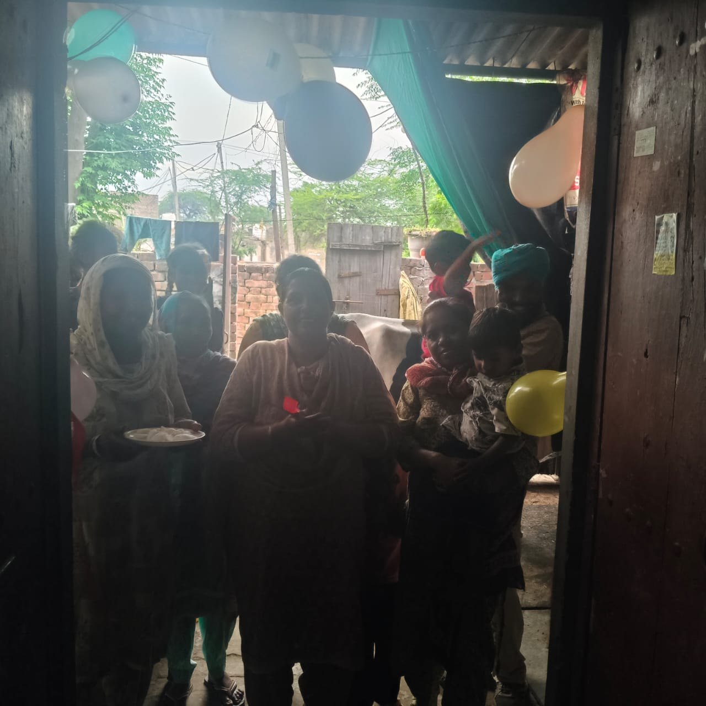
Democratizing Climate Action by Restoring Environment and Strengthening Livelihoods
SELF (Sustainability, Environment and Livelihood Forum) is a section 8 company registered under The Company Act, 2013. SELF is initiated by seasoned development and environment professionals with the objective of mainstreaming and democratizing environment conservation and climate action, while simultaneously creating sustainable livelihoods.
With a strong background in civil society engagement, the founders bring more than two decades of experience each in environment conservation, social work, and community empowerment. Their collective journey has been shaped by the recognition that environmental degradation is steadily eroding resilience, often hidden by shifting baselines that make us forget what has already been lost.
SELF exists to challenge this invisibility — to restore ecosystems, strengthen livelihoods, and ensure that climate action is led by those closest to the land. By capitalizing on the social strength of communities and civil society organisations, and by addressing market asymmetries and knowledge gaps, SELF builds pathways where farmers and rural communities are not just participants, but leaders of transformation.
At SELF, sustainability is about more than reducing emissions — it is about restoring resilience, dignity, and equity in the way communities live and work. True sustainability means confronting invisible losses and building pathways that protect both ecosystems and livelihoods.
Restoring balance by transforming ecological threats into regenerative opportunities, advancing resilience for people and planet.
Empowering rural communities through dignified work, local value chains, and climate-positive opportunities.
Placing small farmers, especially women, at the center of solutions ensures that sustainability is rooted in local realities.
Sustainable practices must strengthen incomes and agency, not burden communities with costs or risks.
Demystifying science — from methane emissions to soil health — so that farmers can act with clarity and confidence.
Tackling roadblocks and inequities in access to finance, markets, and technology to ensure fair participation.
Harnessing the power of civil society organisations and community networks to drive systemic change.
Aligning our work with Environmental, Social, and Governance (ESG) principles — ensuring that climate action is transparent, accountable, and socially just.
SELF is guided by a clear commitment to democratize climate action and create equitable pathways for rural communities.
Empowering farmers and rural communities to restore environment and livelihoods by breaking market barriers and bridging knowledge gaps — democratizing climate action for resilience and equity.
Our mission is to democratize climate action by empowering small farmers and rural communities to lead the restoration of environment and livelihoods. We capitalize on the social strength of communities and civil society organisations to drive collective action, while actively addressing market asymmetries and roadblocks that hinder equitable participation. By demystifying the science, creating financial and market linkages, and fostering inclusive, farmer-driven models, SELF builds pathways where ecosystems are restored, livelihoods are strengthened, and climate action becomes both just and enduring.
Democratizing Climate Action by Restoring Environment and Strengthening Livelihoods
We envision a future where rural communities lead climate resilience, supported by the collective strength of civil society and empowered through access to knowledge, markets, and finance. Environmental degradation has been slowly eroding our resilience, often hidden by shifting baselines that make us forget what has already been lost. By recognizing these invisible losses and addressing both market asymmetries and information gaps, SELF seeks to build a world where climate action is inclusive, livelihoods are dignified, and ecosystems are restored through collective agency.


WISE is a pioneering model by SELF that positions women as nano-entrepreneurs, enabling them to lead climate-smart transformations in agriculture and dairy.


In Rajasthan, our initiative promotes decentralised feed processing units in Ajmer, Alwar, Karauli, and Pali to convert invasive Prosopis juliflora pods into livestock feed, reducing ecological threat while creating local value chains.
Location: Ajmer, Alwar, Karauli, Pali — Rajasthan | Status: Ongoing


SELF has partnered with 23 NGOs and many FPOs to strengthen capabilities around climate action. SELF provides support, coordination, and collaboration to ensure climate action starts from the ground and its voices are heard at the top as well.
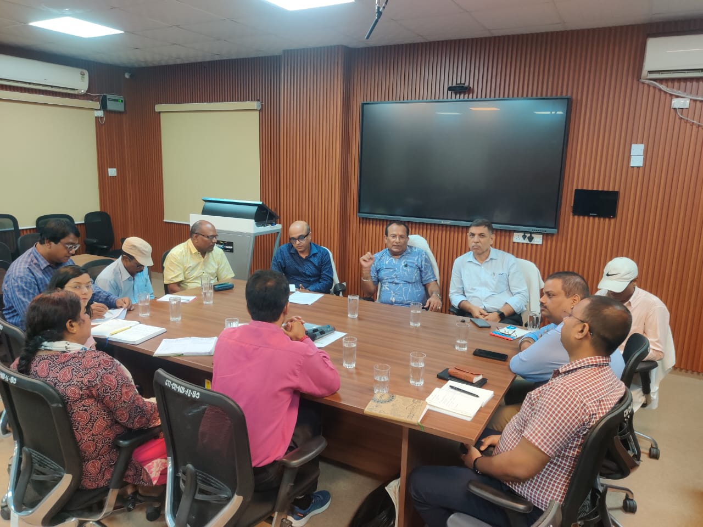
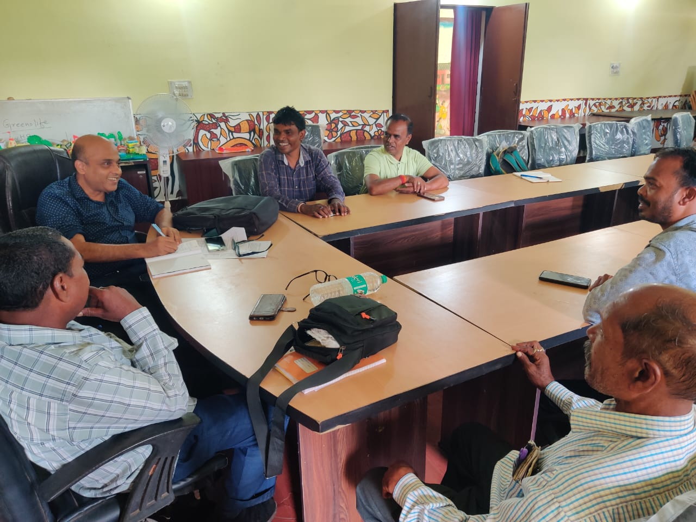
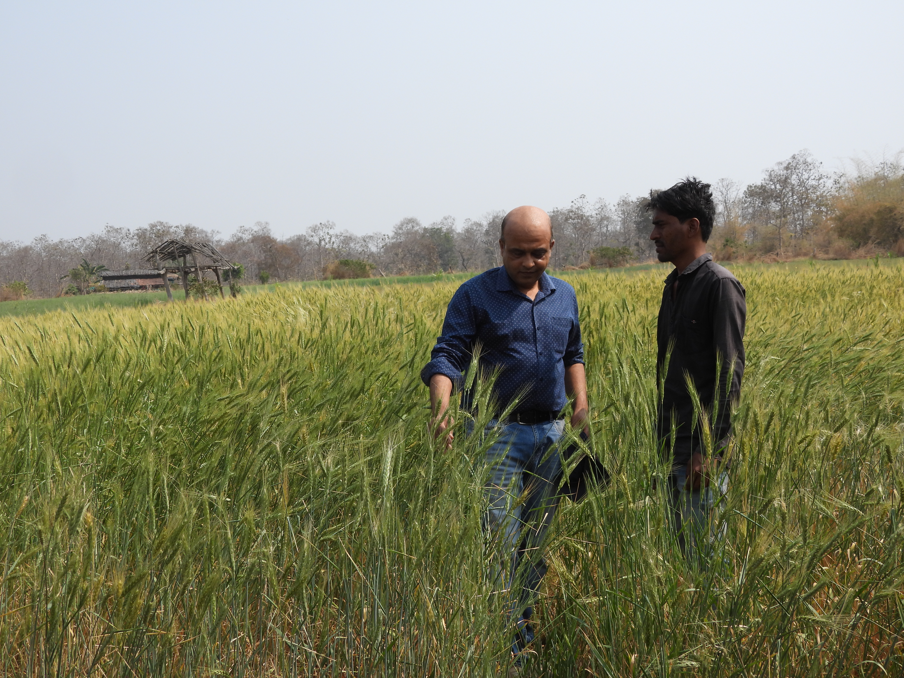
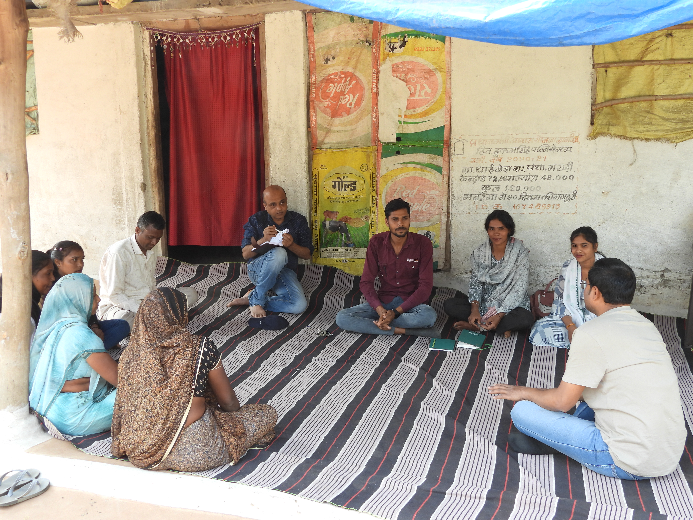
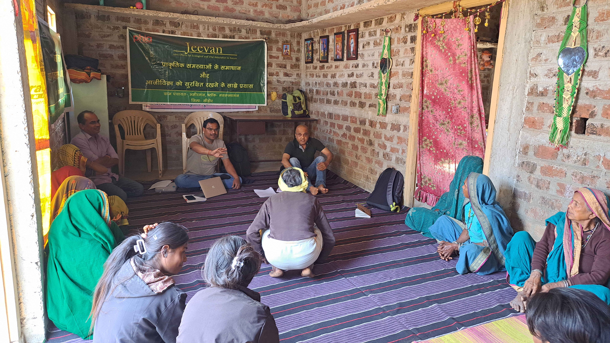

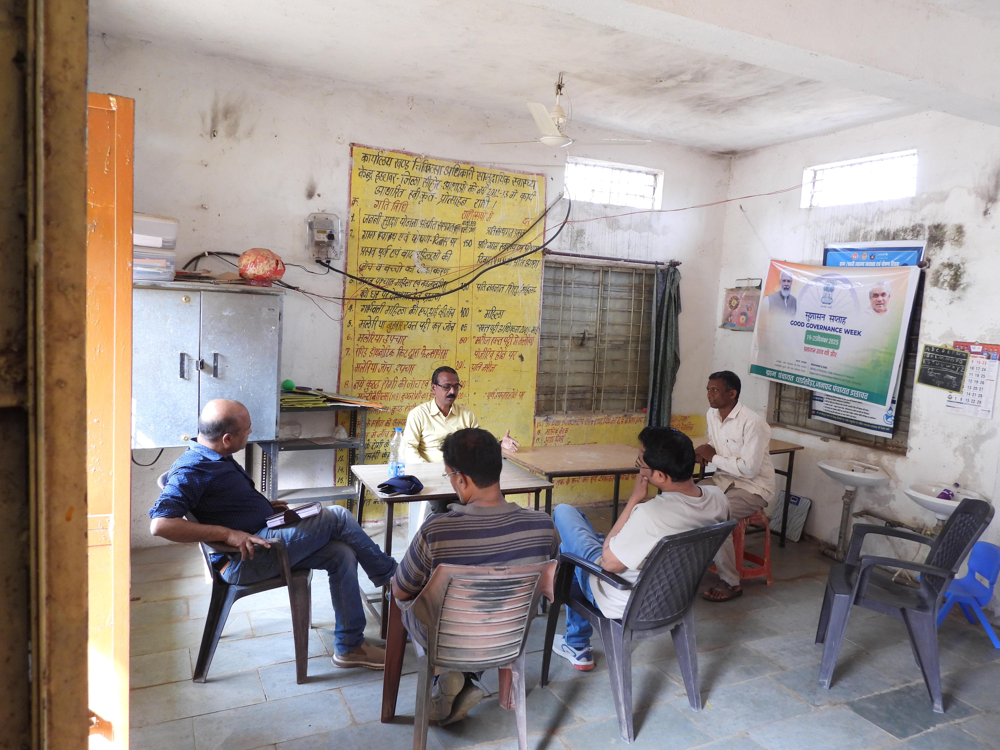


SELF works with farmers and dairy communities to adopt balanced ration feeding and improved agricultural practices that significantly cut methane emissions. By demystifying the science and linking farmers to actionable solutions, this initiative advances both climate goals and farm productivity.

Bundelkhand is poised for transformation. The Kharka Initiative ensures irrigation-led growth is matched with ecological restoration, institutional strengthening, and social inclusion — creating a resilient, equitable, and convergence-ready model for just transition.
Key Challenges Addressed:
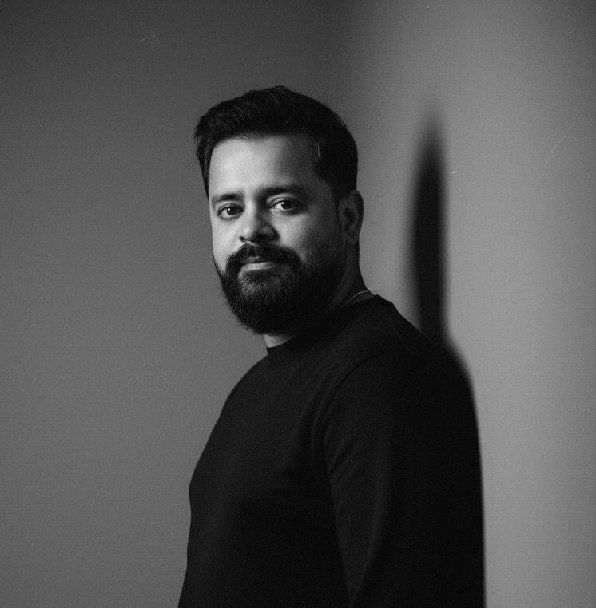
Director Communications, SELF
A writer and creative producer. Written and creative produced Ajey the untold story of a yogi (2025). Has worked with Eros International, ESPN, and other international communication firms.
LinkedIn Profile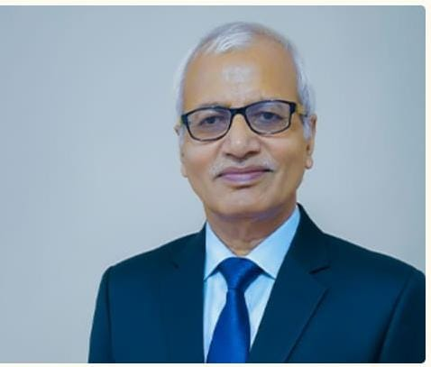
Sr. Advisor
Former Head and Dean, Department of Chemistry, Dr. H.S. Gaur University.
SELF works in collaboration with a growing network of NGOs, FPOs, and knowledge organisations committed to climate action and community empowerment.
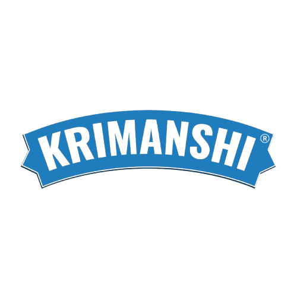
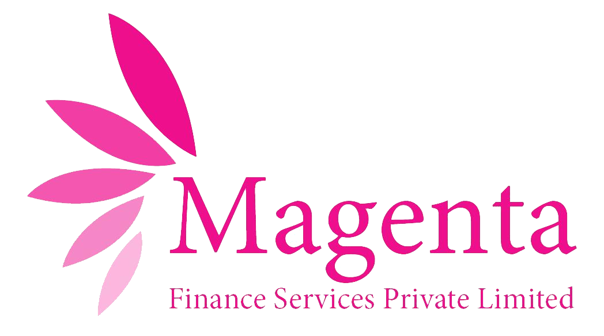
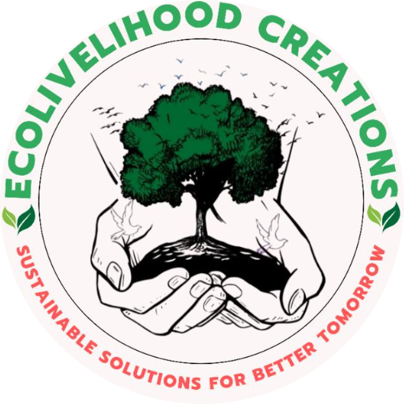

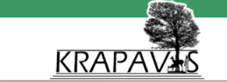

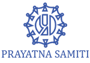
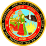

Help us democratize environment conservation.
Your donation supports our mission to empower some of the most resource-poor women and marginalized households. We aim to support civil society organisations working in remote geographies through capacity building, advisory, and implementation support.
Your contributions support our mission towards climate action and equitable development. You can read more about the impact of our work on our website.
Donations to SELF qualify for deduction u/s 80G(5) of the Income Tax Act, 1961.
Donate NowPlease note: Only Indian nationals with a valid PAN card can make a donation on this platform. We do not accept anonymous donations.
info@self.org.in
Dr. Piyusha Tiwari: +91 70110 25490
Rishu Garg: +91 99108 49280
1240 B1, Vasant Kunj,
New Delhi – 110070
Innov8 Ras Vilas, Lower Ground Floor,
Salcon Rasvilas D-1, Saket District Center,
New Delhi – 110017
Whether you want to Volunteer, Partner, or Support our work, we'd love to hear from you.